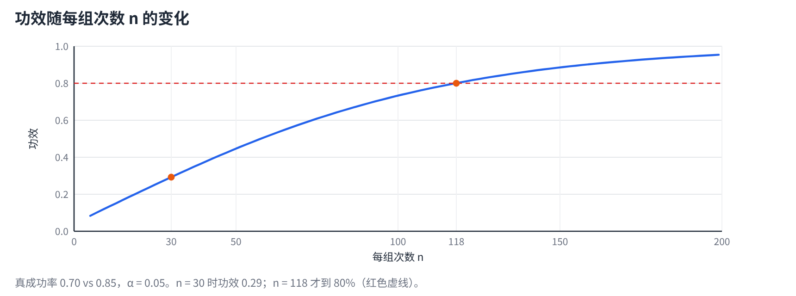
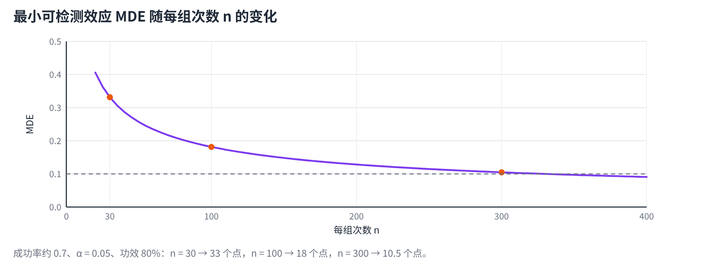
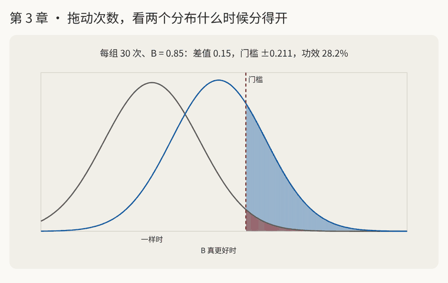

第 3 章 · 要测多少次：功效、最小可检测效应和样本量
本地运行
git clone https://github.com/wikieden/math-and-eval-stats
cd math-and-eval-stats/code/notebooks
pip install jupyterlab torch numpy
jupyter lab ch03_power_sample_size.ipynb也可以下载后直接用 VS Code 打开 .ipynb 运行。需要 GPU 的章节在 Colab 里选「代码执行程序 → 更改运行时类型 → GPU」。
本章回答：测 30 次没看出差别，是两个策略真的一样，还是测得太少？想检出"提升 15 个点"，每边要测多少次？已经只能测 100 次，那能检出多小的提升？
讲解日期：2026-11-25 · 上一章：第 2 章 两个成功率比一比 · 下一章：第 4 章 配对比较
对应原文：NIST e-Handbook §7.2.4.2materials/text/web/nist/prc242.txtL19–L111（比例检验的样本量公式）；Miller《Adding Error Bars to Evals》§5materials/text/papers/adding-error-bars-to-evals-2411.00640.txtL410–L470（式 (9) 样本量、式 (10) MDE、969 题的例子）
本章缩写：α（alpha）= 一类错误率（误报）；β（beta）= 二类错误率（漏报）；1 − β = 功效（power）；MDE = Minimum Detectable Effect（最小 / 可检测 / 效应）；\(z_p\) = 标准正态的上 p 分位数（比它大的概率是 p）；δ（delta）= 想检出的差值；Φ（Phi）= 标准正态的累积分布函数。全部缩写见 附录 · 缩写与术语表
讲解
第一步：两类错误：误报和漏报（2026-11-25）
类比：机场安检。 把没带违禁品的人拦下来是误报，放过带了违禁品的人是漏报。门调得越严，误报越多、漏报越少；想两样都少，只能检查得更仔细（多测几次）。
| 真相：两个策略一样 | 真相：B 确实更好 | |
|---|---|---|
| 判"B 更好" | 一类错误（误报），概率 α | 判对，概率 1 − β = 功效 |
| 判"说不出差别" | 判对 | 二类错误（漏报），概率 β |
第 2 章的"p < 0.05"控制的只是 α。一个测得太少的实验，α 照样是 5%，但 β 可能高达 70%：大多数真实的提升都会被判成"没差别"。
惯例：α = 0.05（双侧），功效 80%（β = 0.2）。对应的分位数（代码算的）：\(z_{0.025} = 1.960\)，\(z_{0.20} = 0.842\)，\(z_{0.10} = 1.282\)。
一句话：α 管误报、β 管漏报；"没检出差别"只有在功效够高时才说明"差别不大"。
第二步：功效：给定次数，真有差别时能看出来的概率（2026-11-25）
类比：拿小网捞鱼。 鱼确实在（真有差别），网眼太大（次数太少）就捞不上来。功效就是"鱼在时捞得上来的概率"。
公式（正态近似、每组 n 次、双侧 α）：
读法："差值除以标准误，减去 1.96，再查正态表"。差值是标准误的几倍，决定了能不能越过 1.96 那道门槛。
例子（编的）：真成功率 A = 0.70、B = 0.85，每组 30 次：
| 算什么 | 结果 |
|---|---|
| SE = √((0.21 + 0.1275)/30) | 0.106 |
| 差值 / SE = 0.15 / 0.106 | 1.414 |
| 功效 = Φ(1.414 − 1.960) | 0.293 |
| 模拟 2 万次实验，z 检验显著的比例 | 0.280 |
真有 15 个点的提升，每组测 30 次，七成的概率看不出来。

图 3-1 · 真成功率 0.70 vs 0.85：n = 30 时功效 0.29，到 n = 118 才达到 80%一句话：功效 = Φ(差值 / SE − 1.96)；0.70 vs 0.85 每组 30 次，功效只有 29%。
第三步：样本量公式：想要 80% 功效，每组要多少次（2026-11-25）
类比：要看清多小的字，决定了望远镜要多大。 把第二步的公式反过来解 n：
NIST §7.2.4.2 给的是单样本版本（和固定的 \(p_0\) 比，L95–L99）；Miller 式 (9)（L440–L445）是两组版本，\(\omega^2\) 那一项在不配对时就是两组方差之和。
例子（代码，向上取整）：
| 想检出 | 功效 | 每组次数 |
|---|---|---|
| 0.70 → 0.85（15 个点） | 80% | 118 |
| 0.70 → 0.85 | 90% | 158 |
| 0.70 → 0.75（5 个点） | 80% | 1248 |
n ∝ 1/δ²：想检出的差缩小 3 倍，次数要多约 10 倍（差值的方差项也略有变化）。
Miller 的例子（§5 L448–L455）：ω² = 1/9、想检出 δ = 0.03、α = 0.05、功效 80%：\(n = (1.96 + 0.84)^2 \cdot (1/9) / 0.03^2 \approx 969\) 道独立题。论文据此建议新的评测集至少要 1000 题。
一句话：样本量 n = (z_α/2 + z_β)²·(两组方差之和)/δ²；差值减半，次数翻 4 倍。
第四步：次数定了，能检出多小的差：MDE（2026-11-25）
类比：体重秤的最小刻度。 秤只能读到 0.5 公斤，就别想用它称出 0.1 公斤的变化。
把样本量公式反过来解 δ（Miller 式 (10)，L462–L464）。两组成功率都在 p 附近时：
例子（成功率约 0.7，α = 0.05，功效 80%）：
| 每组次数 | MDE |
|---|---|
| 30 | 0.331（33 个点） |
| 100 | 0.182 |
| 300 | 0.105 |

图 3-2 · 每组 30 次时只能可靠检出 33 个点以上的差别；要检出 10 个点得 300 多次怎么用：开测之前先算 MDE。如果团队期望的提升是 10 个点，而预算只够每组 30 次（MDE = 33 个点），这个实验大概率"看不出差别"，结论早就可以预料，不值得跑；要么加预算，要么换配对设计（第 4 章）降方差。
场景代码：用 statsmodels 算样本量（真实库的写法；本书环境没装 statsmodels，没跑过）：
from statsmodels.stats.power import NormalIndPower
from statsmodels.stats.proportion import proportion_effectsize
h = proportion_effectsize(0.85, 0.70) # Cohen's h：比例差的标准化效应量
n = NormalIndPower().solve_power(effect_size=h, alpha=0.05, power=0.8, ratio=1.0) # 每组次数
它用的是反正弦变换的效应量，结果和本章的公式差一两次，量级一致。
一句话：MDE = (z_α/2 + z_β)·√(2p(1−p)/n)；开测前先算它，期望的提升比 MDE 小就别指望看出来。
动画演示：拖动次数，看两个分布什么时候分得开

可交互版：animations/03-power-sample-size.html（滑块调每组次数 n 和 B 的真成功率）。
怎么看：
- 两座山是"真没差别"和"真有差别"时，观测差值的分布；竖线是判显著的门槛（第一步）；
- 红色面积是 α（误报），蓝色面积是功效（第二步）；
- 把 n 从 30 拖到 120：两座山变窄，蓝色面积超过 80%（第三步）；
- 把 B 的真成功率拉近 A：右边那座山往左挪，要更大的 n 才分得开（第四步）。
练习与作答记录
题 1（第二步 功效）：真成功率 A = 0.5、B = 0.7，每组 40 次。用正态近似算功效（保留 2 位）。
作答：（待作答）
题 2（第三步 样本量）：想检出 0.80 → 0.90，α = 0.05、功效 90%，每组要多少次？
作答：（待作答）
题 3（第一步、第四步）：同事测了每组 20 次，p = 0.4，汇报"两个策略没区别"。你怎么回应？他应该补充报告什么？
作答：（待作答）
口诀
误报 α 漏报 β，没检出不等于没差别；
功效查表：差值除 SE 再减一点九六；
次数等于 z 和平方乘方差，再除差值平方；
开测先算 MDE，期望比它小，测了也白测。
本章复习卡片
ST31（两类错误与功效的定义）、ST32（两组样本量公式、n ∝ 1/δ²）、ST33（MDE 的公式与用法）。练习做完后，按答错、卡住的地方补上。
附录 · 延伸阅读
留给以后深入学习用，不影响本章主线。★ 是建议先读的。
推荐阅读
| 读什么 | 读哪里 | 读它为了什么 |
|---|---|---|
| ★ Miller《Adding Error Bars to Evals》 | §5 L410–L470；附录 B | 式 (9) 样本量、式 (10) MDE、969 题的例子和推导 |
| ★ NIST e-Handbook §7.2.4.2 | prc242.txt L19–L111 |
比例检验样本量的推导，单侧 / 双侧两种写法 |
| NIST e-Handbook §7.2.4.1 | prc241.txt |
第 1 章的 Wilson 区间，和样本量公式同一套正态近似 |
| Kress-Gazit 等《Robot Learning as an Empirical Science》 | §6 | 真机评测里"测多少次"受什么约束 |
数学原理
- 功效公式的来历：H₁ 下观测差值 \(\hat\delta \sim \mathcal N(\delta, SE^2)\)，判显著的条件是 \(\hat\delta/SE > z_{\alpha/2}\)（只看对的那一侧），概率 \(P(\hat\delta > z_{\alpha/2}SE) = \Phi(\delta/SE - z_{\alpha/2})\)。
- 样本量公式：令功效 = 1 − β，即 \(\delta/SE - z_{\alpha/2} = z_\beta\)，再把 \(SE = \sqrt{V/n}\) 代入解 n。
- 为什么是 1/δ²：SE ∝ 1/√n，要让 δ/SE 保持不变，δ 减半 √n 就要翻倍，n 翻 4 倍。
公式清单
| 公式 | 意思 |
|---|---|
| 功效 \(\approx \Phi(\delta/SE - z_{\alpha/2})\) | 给定 n 的功效 |
| \(n = (z_{\alpha/2} + z_\beta)^2[p_A(1-p_A) + p_B(1-p_B)]/\delta^2\) | 每组样本量 |
| \(\text{MDE} = (z_{\alpha/2} + z_\beta)\sqrt{2p(1-p)/n}\) | 最小可检测效应 |
| \(n = (z_{\alpha/2} + z_\beta)^2\,\omega^2/\delta^2\) | Miller 式 (9)（σ² 项为 0） |
代码对照：把本章的数字用代码算一遍
代码在仓库本地
math-and-eval-stats/solutions/chapter-code/ch03_power_sample_size.py，配套测试tests/test_ch03.py：
bash cd math-and-eval-stats/solutions/chapter-code uv run python ch03_power_sample_size.py uv run pytest tests/test_ch03.py
讲义 ↔ 代码：
| 讲义 | 公式 | 写法 | 跑出来 |
|---|---|---|---|
| 第一步 分位数 | \(z_p\) | z_of(0.025)、z_of(0.20) |
1.960、0.842 |
| 第二步 功效 | Φ(δ/SE − z) | power_at(0.70, 0.85, 30) |
0.293（模拟 0.280） |
| 第三步 样本量 | 两组公式 | n_per_group(0.70, 0.85) |
118；功效 90% 时 158 |
| 第四步 MDE | (z+z)√(2p(1−p)/n) | mde(0.7, 30) |
0.331 |
| 第三步 Miller | 式 (9) | miller_n(1/9, 0.03) |
969 |
关键几行：
def n_per_group(p1, p2, alpha=0.05, power=0.8):
delta = abs(p1 - p2)
var = p1 * (1 - p1) + p2 * (1 - p2) # 两组方差之和
return math.ceil((z_of(alpha / 2) + z_of(1 - power)) ** 2 * var / delta**2) # 向上取整
z = (k2 / n - k1 / n) / se # 模拟：每轮实验做一次 z 检验
return float(np.mean(np.abs(z) > z_of(0.025))) # 显著的比例 = 功效
代码里才看得到的 3 件事：
z_of(1 - power)是 z_β：功效 0.8 时 β = 0.2，要的是上 0.2 分位数 0.842；写成z_of(power)会得到 −0.842，样本量就算小了。- 公式只看"对的那一侧"：双侧检验在"反方向显著"上也有一点点概率，真实功效比公式略高；差值不太小时可以忽略。
- 模拟和公式差 1 个多点：n = 30 时正态近似本身有误差（第 1 章说过 Wald 在小样本下不准），模拟值 0.280 比公式 0.293 略低。
自己改一改（不影响练习答案）：
- 把
power_at的 n 从 30 改成 60，看功效是不是正好翻倍（不是，为什么？）。 - 用
mde(0.5, 100)和mde(0.9, 100)比一比：成功率接近 50% 时为什么最难检出差别？